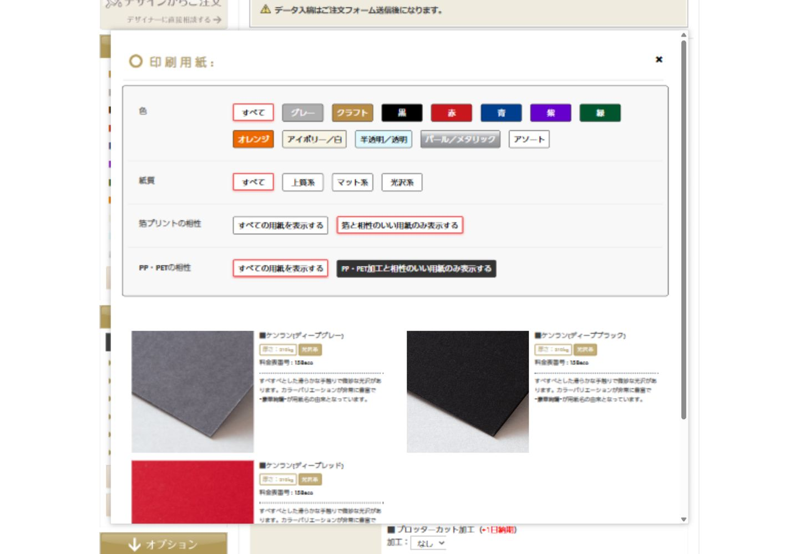

WORK / WEB DEVELOPMENT
ドット箔プリント試し刷り ご注文フォーム
複雑な印刷の注文条件を、
選択しながら入力できるフォームへ。
カード・フライヤーの試し刷りを注文するためのフォームを制作しました。用紙・箔・印刷・加工の指定から、ご注文者さまの情報、発送方法まで、注文に必要な情報をまとめて入力できるページです。
公開サイトを見る （新しいタブで開きます）
01 / OVERVIEW
制作のポイント
印刷の注文では、サイズや用紙、箔の色数、加工など、多くの条件を指定する必要があります。項目を並べるだけでなく、選択内容に合わせて候補や入力欄を切り替えることで、条件同士の整合性に配慮しています。
「ご注文内容」「ご注文者さまの情報」「発送に関する情報」に分けて入力欄を構成。必須表示や補足説明を添え、入力する内容が分かるようにしています。
02 / IMPLEMENTATION
主な実装内容
- 01
用紙を比較して選ぶモーダル
用紙の写真や説明を一覧で確認できる選択画面。色・紙質・箔や加工との相性で絞り込み、指定サイズに対応する候補を表示します。
- 02
注文仕様に連動する選択項目
サイズや印刷条件に応じて、選択肢を制御。サイズ変更時には用紙の選択を解除し、条件の異なる選択が残らないようにしています。
- 03
1件・2件の注文に合わせた入力欄
件数の選択に応じて2件目の商品入力欄を切り替えます。非表示の入力欄を無効化し、不要な必須チェックや送信項目が発生しないように制御しています。
- 04
入力チェックと注文情報の整理
必須項目やメールアドレス確認などの入力チェックを用意。郵便番号による住所補完や、発送先に応じた入力欄の切り替えにも対応しています。
